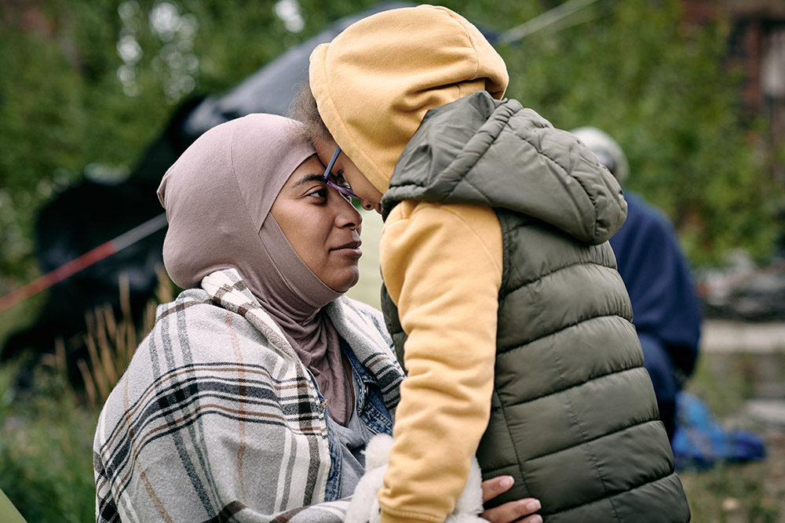
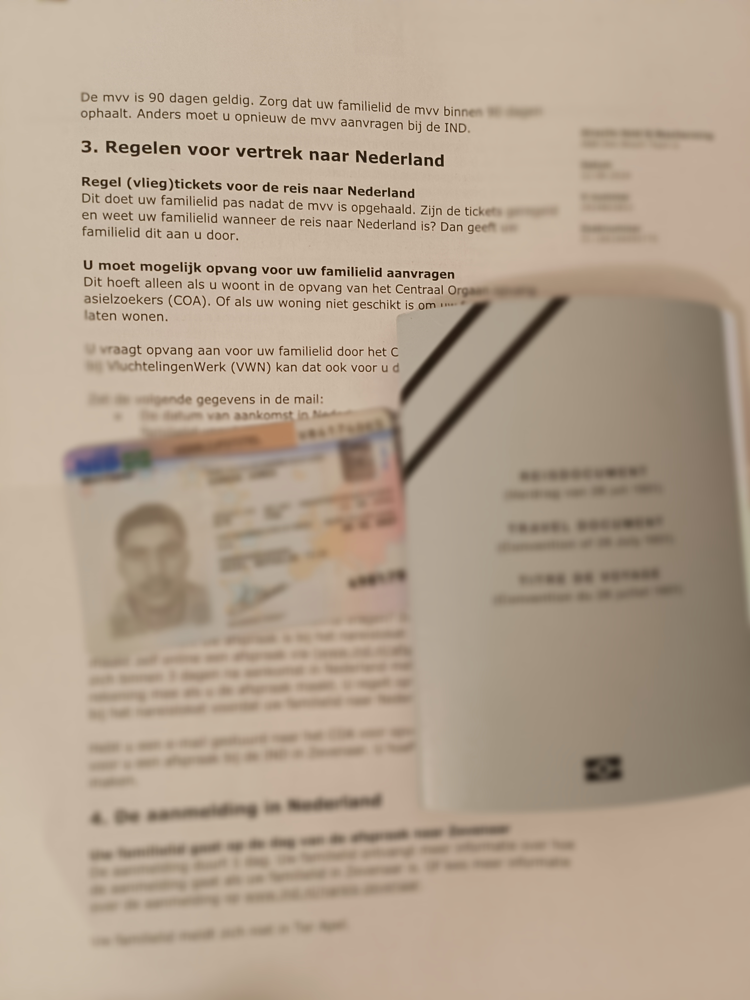

When you are granted asylum, the next step is Family Reunification.
You need to apply for the family reunion within three months after getting residence permit. VluchtelingenWerk Nederland (VWN) helps you in applying family reunion. VWN is an institution at your COA location where you are living.
You can submit the application for the following:
Your husband or wife
Your partner
Your child or foster child
Your parents if you were unaccompanied and under 18 when you submitted your asylum application

Family Reunion
Documents Required
IND letter stating that you are granted asylum
Temporary residence permit card (5-year ID card which you collect couple of weeks after getting positive decision of your asylum application)
You must prove the identity of your family members and the family relationship with the documents (family certificate, marriage certificate, ID/Birth certificates)
You can track the progress of your application for family reunion through mijnIND: https://ind.nl/nl/mijn-ind.
The process takes about 6 months. Once the application is approved, your family members can make appointment within 90 days at the Dutch embassy for the MVV visa (valid for 90 days).
If the application is rejected, you can object against this decision.
Collecting MVV Visa
When your family member collects the MVV, the passport must be valid for at least another 6 months. Does your family member not have a passport? Then your family member usually gets a temporary passport (a Dutch laissez-passer). This is a replacement travel document for a single journey.
During the appointment, biometrics will be taken. Your family members also need to take a new passport sized photo with them.

Letter received from IND to collect MVV Visa
Reporting in Zevenaar
After arriving to the Netherlands, the family members must register within 3 days in Zevenaar. This can only be by appointment. Make an appointment for family reunification of refugees with IND Zevenaar. Your family members will get their ID cards and residence permit there. If the residence permit is not ready yet, you will receive a letter and then you can collect the residence permit at an IND desk.